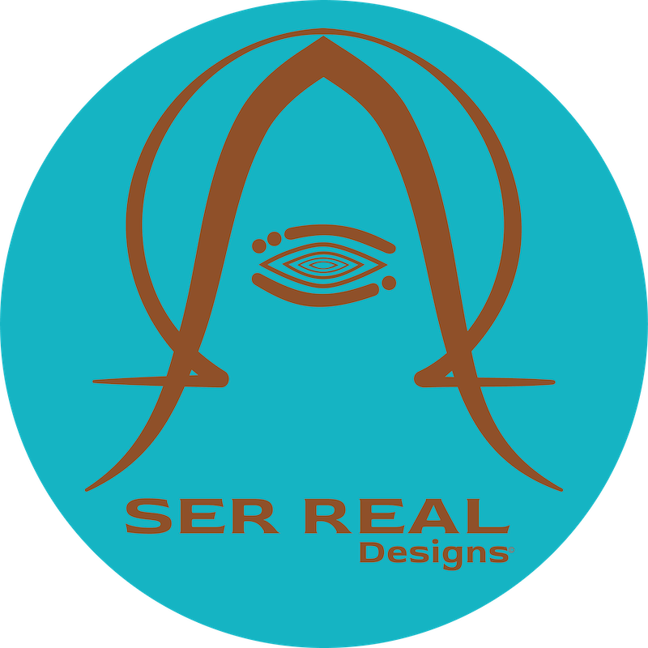

Mark is currently attending the School of Design at San Francisco State University (SFSU) in pursuit of the B.S. in Visual Communication Design. His interest in graphic arts and design stems from his childhood ...explore the 'About' & 'Inspo' page for more info...